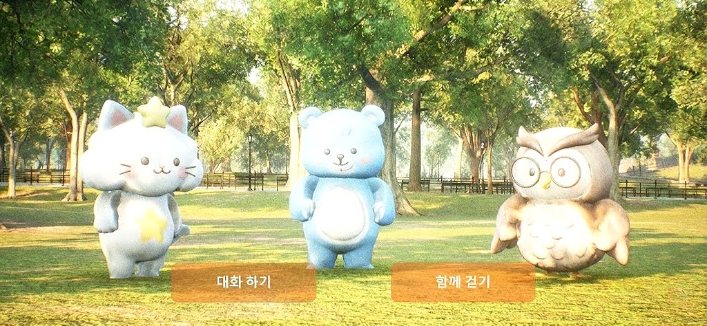
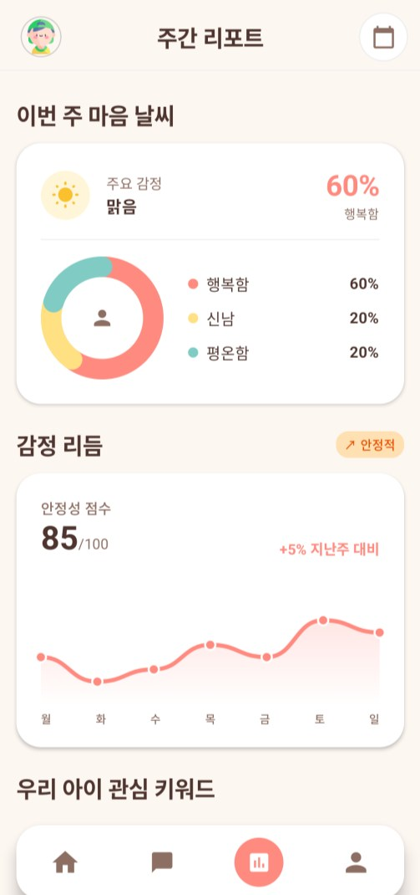
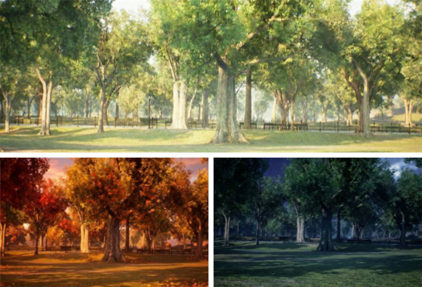
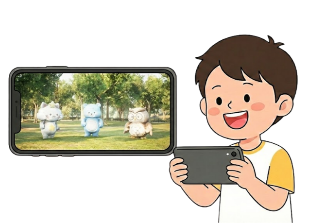
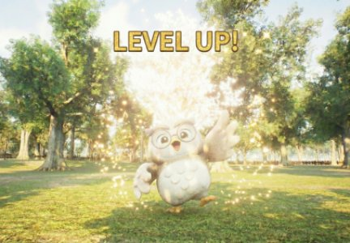
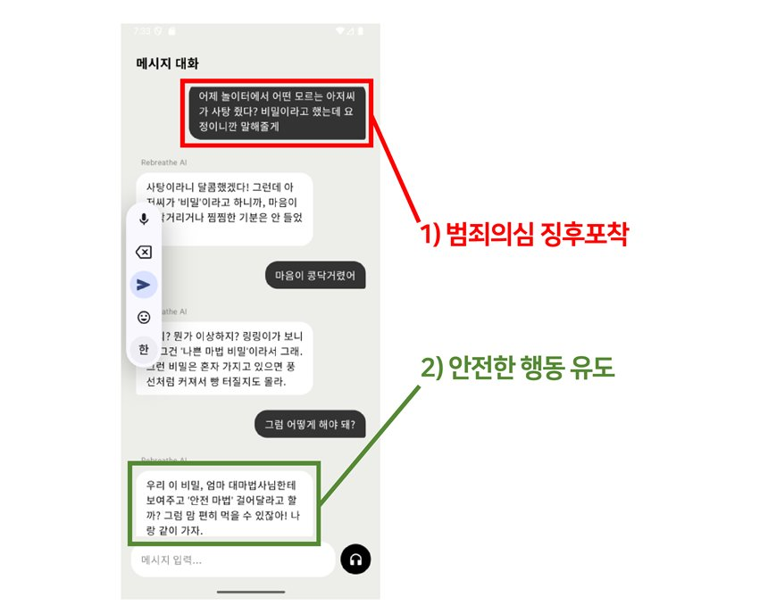
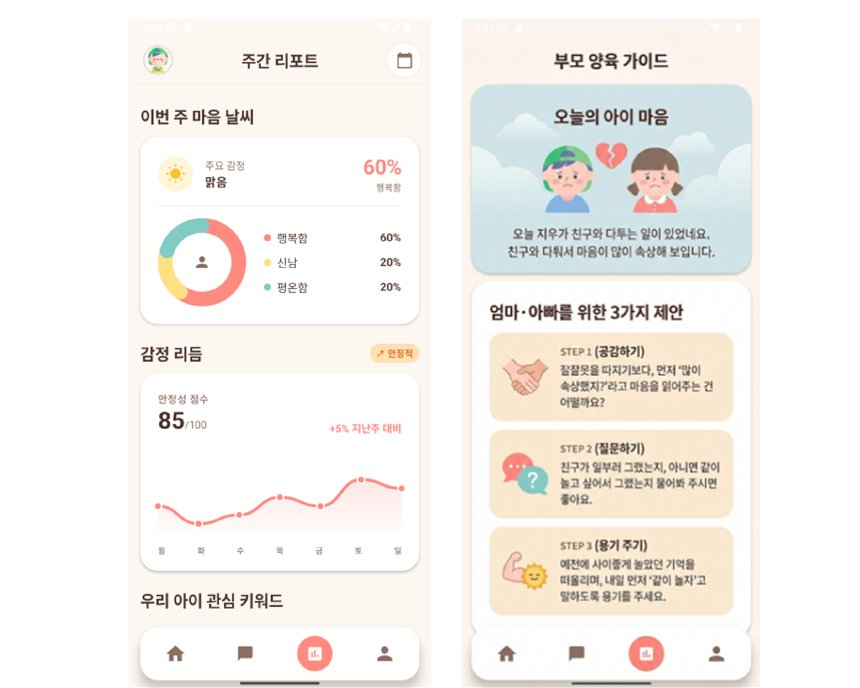
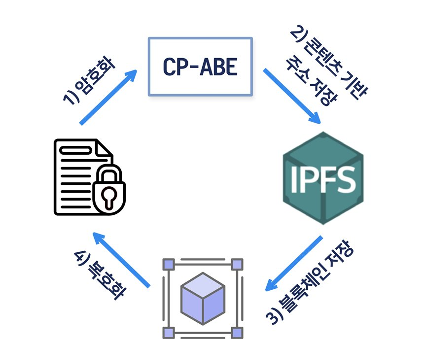
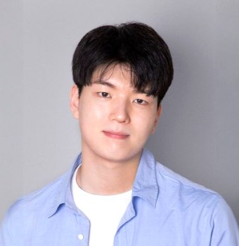
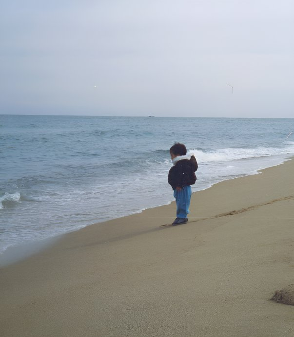

연도별 0~12세 정신건강질환 환자 수
76% 상승 · 최근 5년
멀티모달 AI · 가상현실(VR) · 블록체인
아이에겐 매일 만나는 단짝 친구,
부모에겐 가장 정확한 마음 번역기
아이는 AI 캐릭터와 놀이로 교감하고, 부모는 리포트로 아이의 마음을 읽는
4~12세 맞춤형 양방향 멘탈 케어 솔루션
Problem
인격 형성기 아동의 정서 불안을 방치할 경우, 청소년기 문제 행동 및 성인기 만성 질환으로 악화됩니다.
연도별 0~12세 정신건강질환 환자 수
76% 상승 · 최근 5년
7~12세 정신건강질환 다빈도 질병
우울·불안장애가 2위
주요 정신질환의 경과
초기 개입 및 지속적인 케어 솔루션 필요
출처: 건강보험심사평가원, 『2025년 생활 속 질병·진료행위 통계』
Problem 1
예방이 아닌 측정을 목적으로 하며, 아동의 정서를 케어하는 역할에 한계가 있음
Problem 2
아이의 감정에 공감하거나 진정시켜주는 양방향 소통이 구조적으로 불가능
Problem 3
감정과 생각을 말로 표현해야 하는 것 자체가 높은 진입장벽을 형성하고 숙제로 느껴짐
Problem 4
텍스트 기반의 복잡한 UI로 구성되어, 읽기·쓰기가 서툰 아이들의 사용이 차단됨
Solution
아이는 3D 공간에서 AI 캐릭터와 음성으로 대화하고, 그 대화는 보호자를 위한 감정 리포트로 번역됩니다.


문해력 장벽 없이 100% 음성 대화로 캐릭터와 교감합니다. 읽기·쓰기가 필요 없습니다.
발화 내용과 음성 톤·속도까지 이해하는 멀티모달 AI가 감정 신호를 포착합니다.
공감 → 감정 안정화 → CBT 기반 인지 재구성 → 긍정 강화로 이어지는 4단계 상호작용.
감정 추이를 시각화한 리포트와 행동 가이드가 보호자에게 전달됩니다.
“리브리드는 아이의 감정 신호를 AI 캐릭터와의 대화 속에서 발견하고,
그 변화를 보호자가 이해할 수 있는 언어로 번역합니다.”
Core Features
[상황] 민준이 침대에 엎드려 훌쩍임
“흑…흐잉…”
(조심스럽고 부드러운 톤으로) “민준아, 혹시 울고 있니? 무슨 일이야?”
말을 걸기 전, 소리로 상황을 인지
[상황] AI에게 속마음을 털어놓음
“흐엉.. 지훈이가 내 로봇을 뺏어가서.. 꼭.. 너무 슬퍼…”
“저런, 정말 슬펐겠다. 소중한 로봇을 뺏겨서 너무 힘들었구나..”
아이의 감정을 언어로 읽어줌
[AI] 감정 안정화 유도
“우리 같이 천천히 숨 쉬어볼까? 나를 따라 해봐. ‘후우~’”
“흐읍.. 후우… 후우…”
“지훈이가 왜 그랬을까? 혹시 너무 부러워서 잠깐 보고 싶었던 건 아니었을까?”
CBT 기반 인지 재구성
[AI] 보상 피드백 (게이미피케이션)
“음.. 그럴 수도 있겠다… 다음엔 ‘빌려달라고 먼저 말해줘’ 라고 할래.”
(효과음과 함께 캐릭터가 레벨업하며 춤을 춤) “우와! 민준이 마음이 한 뼘 더 자랐네! 멋지다!”
긍정 행동을 성장으로 보상
특징 1
아이의 감정 상태에 따라 다양한 미션과 공간의 날씨·자연·계절 등의 물리 환경이 실시간으로 반응하고 변화하여 깊은 공감대를 형성

특징 2
100% 음성 대화를 통해 아동의 접근성을 확보하고, 음성 톤과 맥락까지 이해하는 멀티모달 AI로 정서적 교감을 극대화

특징 3
감정 표현과 정서적 교감이 가상 친구의 성장으로 이어지는 육성 시스템으로 깊은 애착을 형성하고 자발적인 접속을 유도

Safety
상담에서 발생하는 발화와 주제를 아동의 정서 발달 단계(5~8세, 9~12세)에 맞춰 필터링하고, 잠재적 위험 상황 발생 시 안전 행동을 유도

Report
아이가 나눈 대화 데이터를 종합 분석하여 아이의 감정 상태를 시각화하고, 부모가 자녀의 마음을 이해할 수 있도록 도움

Security
아동 상담 데이터를 보호자만 열람할 수 있도록 제어하고 데이터에 대한 무결성을 보장

설치 예술 및 인터랙티브 미디어 아티스트로 활동
대표의 개인 경험을 바탕으로 한 VR 정신건강 프로젝트 시작
개인 경험 기반의 몰입형 VR 회복 경험 및 위기 개입 실험
자체 개발 AI 상담, 인터랙션, 바이오 피드백, 데이터 보안 구조 연구
Try it
키보드로 바닷가를 직접 걸어 다니며 캐릭터와 이야기를 나누는 2D 체험입니다. 아이의 감정에 따라 하늘과 바다의 색이 바뀌고, 산책이 끝나면 보호자 리포트가 만들어집니다.
…
⚠️ 본 체험은 리브리드의 상담 구조(문제 인식 → 공감 → 감정 조절 → 인지 재구성 → 긍정 강화)를 웹에서 보여주기 위한 규칙 기반 데모입니다. 실제 서비스의 멀티모달 AI 모델이 아니며, 의학적 진단·치료를 대신하지 않습니다. 대화 내용은 서버로 전송되지 않고 브라우저 안에서만 처리됩니다.
Market & Competition
아동·청소년 대상 정신 건강 앱 시장
CAGR 14.76%
서비스 핵심 고객 9.91% · 약 23만명
예방형 정서 케어가 가장 큰 효과를 발휘하는 경·중등도 아동을 집중 공략하고, 자녀 정서 관리에 지불 의사가 높은 보호자를 타겟팅하여 초기 PMF와 수익성을 확보
| 비교 항목 | Rebreathe | Kids Diary | SOYES KIDS | 코칭/진료 연동 서비스 |
|---|---|---|---|---|
| 핵심 방식 | 실시간 음성 대화 | 감정 일기 | 모바일 심리 검사 | 코칭 / 진료 연동 |
| 타겟 연령 | 4~12세 | 7세 이상 | 학부모 위주 | 전 연령 |
| 아동 접근성 | 최상 (음성 기반) | 하 (문해력 장벽 / 기록 부담) | 하 (검사 피로 / 거부감) | 중 (재미 요소 X) |
| 지속성 | 높음 (3D 게임 / 육성) | 낮음 | 일회성 | 낮음 |
| 데이터 분석 | 감정 추이 분석 | 단편적 기록 분석 | 정적 결과 통보 (점수/결과) | 의료 데이터 중심 |
| 보호자 가치 | 행동 가이드형 리포트 | 기록 열람 | 결과 통보 | 관리 / 연동 중심 |
| 차별점 | 예방형 데일리 케어 | 기록 | 진단 / 검사 | 관리 / 치료 보조 |
표를 좌우로 밀어서 보세요
기록 중심 케어 (단방향) → 자발적·지속적 사용 불가
텍스트 및 복잡한 UI → 아동 진입 불가
“아동 중심의 케어 솔루션 부재”
상담의 게임화 → 거부감 없는 ‘놀이형 케어’
멀티모달 AI 도입 → 문해력 장벽 해소 (음성 소통)
“아동 리텐션 기반의 차별적 경쟁 우위 확보”
Business Model
B2C 구독을 기반으로 B2G·B2B 라이선스로 확장합니다.
B2C
무료
B2C
20,000원 / 월
Add-On 자녀 추가 1인당 5,000원/월 · 콘텐츠 팩 20,000원/건
B2G
1,200만원 / 연
지자체 돌봄센터 및 교육기관 대상
B2B
3,000만원 / 연
가족 친화 인증기업 및 사내 복지 도입 기업 대상
B2C Channel
B2G Channel
(단위: 백만원)
2026–27
2.4억원
2028
12.6억원
2029–30
138억원
2031–32
630억원
Team
CEO & 가상현실 개발

개발 본부장
대표 참여 작가 · 파사드 & 사운드
대표 참여 작가 · 사운드 엔지니어
정신의학과 전문의
재활치료의학과 전문의
소화기 내과 전문의

창업 배경
“리브리드는 대표의 생존 경험에서 출발해, 모두가 다시 호흡할 수 있는 정신건강 인프라를 만듭니다.”
지금 힘든 마음이 든다면 혼자 견디지 마세요 — 자살예방 상담전화 109 (24시간) · 청소년 상담 1388
| 회사명 | 리브리드 (9월 법인전환) |
|---|---|
| 설립일 | 2025년 06월 03일 |
| 대표이사 | 유준오 |
| 주요사업 | AI 기반 멘탈 케어 서비스, 가상현실 콘텐츠 개발 |
| 주요제품 | REBREATHE 멘탈 헬스 케어 솔루션 |
| 소재지 | 경기도 고양시 덕양구 향기로 182, 1층 T-109호 |
| 문의 | rebreathe.starground@gmail.com |
“There is no such thing as a baby.”
아기 혼자라는 것은 존재하지 않습니다.
— D. W. Winnicott
아이의 마음은 혼자서 무너지지 않습니다.
그리고 혼자서만 회복되는 것도 아닙니다.
우리는 아이를 평가하지 않습니다.
부모를 비난하지 않습니다.
아이와 보호자가 다시 연결될 수 있는 구조를 만듭니다.
저희와 함께, 아이들을 지켜주세요.
리브리드가 함께 하겠습니다.